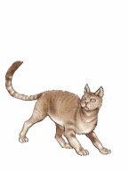
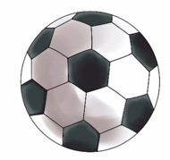

Exercise 3: Rearrange words - part 2
Rearrange the words to form sentences.

A picture of a cat, showing that the rearranged sentence is about a cat.
is this mine cat
is
this
mine
cat
Clear

A picture of a round football, showing that the rearranged sentence is about a ball.
a ball is this
a
ball
is
this
Clear